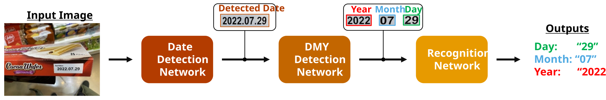
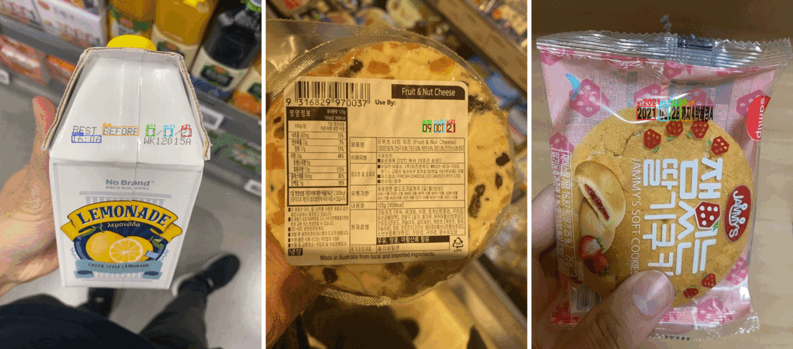

TL;DR: A generalized framework for automatically detecting and understanding expiration dates on product packages, accompanied by the publicly available ExpDate dataset.
It is important to understand the expiration date. However, it is challenging for machines to understand it. Most previous methods recognize expiration dates in limited conditions. To address this problem, a generalized framework for detecting and understanding expiration dates has been proposed. This framework handles challenging cases and distinguishes 13 different date formats. Unlike previous methods, a neural network-based date parser is adopted in the framework to understand the meaning of an expiration date by identifying the day, month, and year. The experimental results demonstrate the proposed framework achieves 97.74% recognition accuracy for expiration dates in various formats and challenging cases. Since there is no publicly available dataset of expiration dates, a novel dataset collection named ExpDate was created and opened.

This study presents a generalized framework for detecting and interpreting expiration dates on product packages. The framework sequentially employs three networks for date detection, day–month–year (DMY) detection, and character recognition. Given an input image, the date detection network localizes and extracts candidate date regions. The DMY detection network then identifies and separates the day, month, and year components, which are subsequently transcribed by the recognition network. Finally, the system determines the expiration date from the recognized candidates. In this way, the proposed framework can reliably understand expiration dates across diverse printing conditions and various date formats.
The proposed framework handles challenging expiration-date cases and distinguishes among 13 date formats. It can detect and understand expiration dates even when an input image contains multiple dates. Moreover, it identifies date, due-mark, production-mark, and code-mark classes. In the qualitative results, Green, cyan, and red indicate the detected day, month, and year, respectively, while Orange, purple, and blue indicate the due mark, production mark, and code mark, respectively.

A webcam-recorded demonstration video illustrates the real-time operation of the proposed framework for detecting and understanding expiration dates on product packages. The framework localizes date regions, identifies and recognizes the day, month, and year components, and determines the expiration date under practical imaging conditions. The demonstration includes challenging cases involving motion blur, illumination variations, and diverse date formats, highlighting the framework’s robustness in real-world scenarios.
Executable versions of the proposed framework are available for both Windows and Ubuntu, allowing users to evaluate the system without configuring the source code or training the models. Users can test their own product images or use a webcam to detect, recognize, and interpret expiration dates in real time. Please follow the instructions provided on this page.
If you find this work useful in your research, please consider citing:
@article{seker2022generalized,
title = {A generalized framework for recognition of expiration dates on product packages using fully convolutional networks},
author = {Seker, Ahmet Cagatay and Ahn, Sang Chul},
journal = {Expert Systems with Applications},
volume = {203},
pages = {117310},
year = {2022},
publisher = {Elsevier},
}